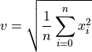

pydsm.delsig.rms¶
-
pydsm.delsig.rms(x, no_dc=False)¶ Compute root means square value (RMS) of a vector.
Given an input vector x, this function computes the square root of the sum of the squared elements of x, optionally removing the mean value of x from its entries beforehand.
- Parameters
- xarray like
input vector
- no_dcbool, optional
whether to remove the mean value, default is False
- Returns
- vfloat
RMS value
Notes
In formal terms, the operation being performed on
 -entry vector
-entry vector
 to return rms value
to return rms value  is
is
Input x must be a 1 dimensional vector. If x is a matrix, the DELSIG version of rms returns a meaningless result, and so this function does… just a different result.